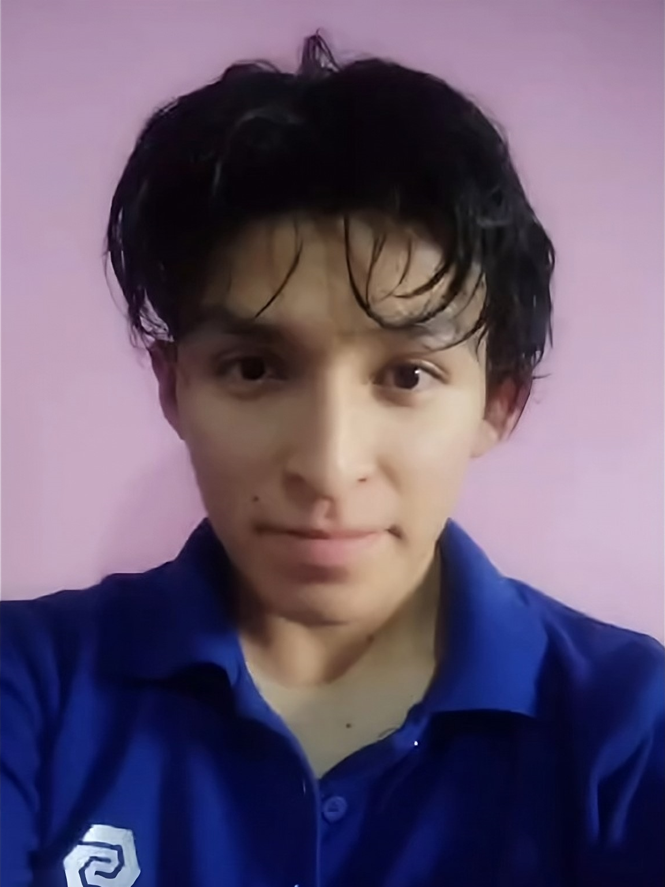

"De la ciberseguridad, se nace. Nací para proteger."
¡Hola Soy Diego Espinoza, tengo 21 años y actualmente soy estudiante de Ingeniería en Ciberseguridad. Estoy especializado en redes Cisco, lo que me permite configurar, gestionar y optimizar redes para asegurar un funcionamiento eficiente y seguro. Además, cuento con conocimientos avanzados en desarrollo web, especialmente en HTML y CSS, lo que me ha permitido diseñar y crear páginas web atractivas y funcionales.
Además, tengo conocimientos avanzados en desarrollo web, con un enfoque especial en HTML y CSS, lo que me ha permitido crear páginas web personalizadas, atractivas y funcionales. Entiendo la importancia de que los negocios, especialmente los pequeños y medianos, cuenten con una presencia online sólida y bien protegida.
Mi objetivo es ayudar a pequeños negocios y emprendedores a implementar sus ideas y proyectos, brindando soluciones tecnológicas que mejoren su presencia en línea y aseguren la protección de sus datos y sistemas. Con una mezcla de habilidades técnicas y un enfoque práctico, busco ofrecer servicios personalizados que se adapten a las necesidades de cada cliente.
Además, tengo experiencia en la implementación de VPNs, la configuración de sistemas de monitorización de redes, y la optimización de QoS para tráfico de voz, asegurando una conectividad estable y segura. Me gusta trabajar en equipo, colaborar con otros profesionales y aprender de cada experiencia.
Contactos
Nombres: Espinoza Calderon Diego André
Dirreccion: Centro de Lima
Email: diegoespinoza1122@gmail.com
